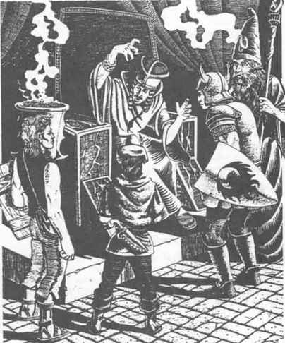

坦瑟的法术 · Tenser’s Spells
谭森的虎眼术（变化系）
解释／描述： 施放此法术，法师可以赋予生物等同于大型猫科动物的卓越夜视能力。生物能够在微光中看清最远 30 英尺的范围，并注意到 60 英尺外的移动物体。在完全黑暗的条件下，生物可以稍微更好地注意到移动物体。没有盲斗熟练项的生物会在法术生效期间获得该熟练项；已经掌握盲斗技巧的生物在黑暗中战斗时只受到 −1 命中处罚。材料成分是一根虎须和磨碎的胡萝卜。
谭森的稳准射击术（变化系）
解释／描述： 此法术会帮助移动中的弓箭手或弩手保持稳定的射击手。无论弓箭手移动多快，或动作多么不稳定，战士使用器械发射的投射物进行射击时，都不会承受攻击处罚。此法术不提供射术加值。材料成分是一根小型盘绕弹簧。
谭森的肉搏术（变化系）
解释／描述： 此法术赋予接受者更强的无武器战斗能力。战士所有拳击、擒抱或压制攻击的命中获得 +2 加值。战士的拳击攻击获得 +2 先攻加值，并有 10% 的额外几率使对手震晕。战士进行擒抱攻击时不会承受先攻处罚，而且战士完成的任何擒抱都更加牢固，因此被控制的生物攻击时受到 −4 处罚。法术材料成分是取自熊或大猩猩胸部的一小撮毛。
谭森的猎鹰术（变化系）
解释／描述： 当此法术施放在一支箭上时，投射物在离弓的瞬间会获得一种特殊魔法，将箭变成一只猎鹰。猎鹰：AC 6；移动 33”；HD 1；hp 6；#AT 3；伤害 1–2／1–2／1；THAC0 19；AL N。
猎鹰的第一次攻击是俯冲攻击，爪击命中获得 +2 加值并造成双倍伤害，但不能进行喙击。此后，猎鹰会按照施法者的命令继续攻击对手，持续相当于施法者经验等级每等级一轮的时间，或直到猎鹰被摧毁。如果猎鹰术施放在魔法箭上，猎鹰会保留该箭拥有的所有魔法加值，包括攻击或伤害加值，因此由 +2 箭形成的猎鹰，在所有攻击和伤害骰上也会获得 +2。此法术不能影响屠戮之箭。法术持续时间结束时，受影响的箭会永久消失。材料成分是一根翼羽。
谭森的致命一击术（变化系）
解释／描述： 此法术会增强施法者的武术能力。施法者进行的所有近战攻击都按通常几率命中，但在法术持续期间，每次成功攻击都会对对手造成最大伤害。此法术可以与任何增强战斗能力的其他魔法结合使用。此法术只影响手持的近战武器或投掷武器，不影响器械发射的投射物。材料成分是一整套虎爪。
谭森的鹰眼术（变化系）
解释／描述： 此法术赋予战士卓越的视力，同时提供熟练的武器使用能力。人物的视觉范围实际上加倍，即使结合红外视觉或普通视觉也一样。这项优势会显著提高远距离的准确度。此外，战士在武器的正常射程内攻击时，获得 +2 命中加值。材料成分是几根取自鹰头的羽毛和磨碎的胡萝卜。
谭森的燃焰之刃术（变化系）
解释／描述： 此法术会赋予一把匕首火焰或寒霜的力量，由施法者选择。每种力量的效果如下。
火焰： 刀刃会像火炬一样点燃，照亮半径 30 英尺的区域。火焰会点燃刀刃接触的任何可燃物。刀刃不获得魔法加值，但在近战中会额外造成 1 点伤害。刀刃对寒冷类生物额外造成 3 点伤害，因此燃焰匕首对雪怪会造成 1d4 + 3 点近战伤害。
寒霜： 刀刃会发出冷蓝色光环，照亮半径 10 英尺的区域。刀刃没有魔法加值，但命中时会额外造成 1 点伤害。寒霜刀刃对火焰类生物（例如 salamander 或火焰 grue）额外造成 3 点伤害。刀刃接触水时，还能每轮冻结最多 1 立方英尺的水。
此法术对已经拥有火焰或寒霜能力的武器无效。法术材料成分是用于制造燃焰之刃的磷，或用于制造寒霜之刃的石英水晶。
谭森的巨力术（变化系）
解释／描述： 这是力量术的改进版本，会以超人类的体能强化接受者。获得的力量取决于施法者的经验等级，如下表所示：
| 法师等级 | 力量提高至 |
|---|---|
| 7 级 | 16 |
| 9 级 | 17 |
| 12 级 | 18／01 |
| 13 级 | 18／75 |
| 14 级 | 18／90 |
| 15 级 | 18／00 |
| 16 级及以上 | 19 |
力量已经高于法术效果的生物，会再获得 1 点力量。永久术或祈愿术都不能使力量永久保持。材料成分是取自巨人或泰坦的一小撮毛发。
谭森的武器大师术（变化系）
解释／描述： 此法术赐予战士时，会提高战士使用一种近战武器的熟练程度。战士不熟练的武器，在该人物手中会变成一项熟练武器。熟练武器会被视为专精武器。此法术效果不允许双武器专精。法术只影响战士和战士子职业人物。武器大师术的材料成分是一根鹤羽。
谭森的奔行战士术（变化系）
解释／描述： 此法术会提高人物在奔跑战斗中的能力。首先，无论人物身上护甲或携带物品的负重如何，移动速度都被赋予 150 码。其次，无论人物在一个近战轮中移动多远，仍有权进行通常数量的近战攻击。如果人物原本每轮可以攻击 2/1 次，那么战士现在可以移动 60 码、攻击一个敌人、再移动 90 码并攻击第二个生物。材料成分是一小撮活狼的毛。
谭森的重击法杖术（变化系）

解释／描述： 此法术会提高施法者用法杖进行近战时的效力。此法术只对非魔法法杖有效。它使命中获得 +1 加值，伤害骰获得 +4 加值。材料成分是一根小铁棒。
谭森的原始狂怒术（附魔系／变化系）
解释／描述： 此法术会暂时赋予战士一股与狂战士相当的愤怒和能量。魔法恐惧不会影响被激怒的战士。战士在攻击和伤害骰上获得 +2 加值，并且每隔一个近战轮获得一次额外攻击，因此 3/2 的攻击序列会变成 2/1。战士还会暂时获得额外 4d4 点生命值；任何伤害都会先从这部分生命值中扣除，然后才减少角色永久生命值总量。不过，此法术也有风险，因为狂战士的愤怒会在法术整个持续期间保持。如果战士的所有对手都在法术结束前被击败，狂暴战士会转而攻击最近的活着生物，在法术结束前不分敌友地持续攻击。解除魔法会立即使狂暴战士恢复正常状态。材料成分是取自狼獾或灰熊的一小撮毛。
谭森的战争福运术（防护系）
解释／描述： 此法术会赋予一名战士在战斗中的特殊幸运加值。战士获得一次机会，避免任何会将其生命值降到 0 或更低的攻击；也能避免任何会以石化、麻痹、石化术、睡眠、魅惑、恐惧、解离、死亡、死亡之词或其他魔法效果将战士移出战斗的魔法。即使先前的豁免检定失败，战士仍有权进行一次豁免检定来避免失败。战士必须以 −2 进行对死亡魔法的豁免检定。如果检定成功，战士就奇迹般地避免失败。正常会将战士生命值降至 0 或更低的伤害攻击，会改为将战士生命值总量降至当前值的一半；也就是说，一个拥有 17 点生命值的战士受到 17 点伤害时，会降到 9 点生命值。任何其他会造成即时失败的攻击，只要死亡魔法豁免检定成功，就不会产生效果。不论豁免检定结果如何，战争福运术都会在攻击后立即被驱散。
材料成分是献给战士守护战神的贵重祭品，必须是神祇感兴趣的物品，价值至少 5,000 金币。